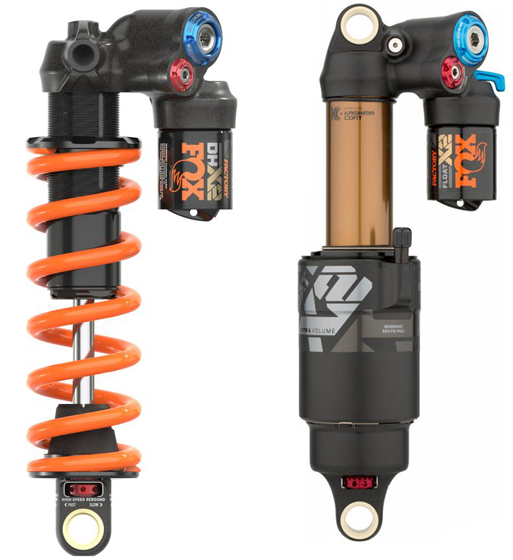

//Qu'est-ce que l'Enduro ?/
Le VTT Enduro, à ne pas confondre avec l'enduro moto, est une des disciplines du VTT qui a la
particularité d'allier de la montée et de la descente "engagée". Je précise que la descente
est engagée car il existe une discipline appelée le cross-country qui allie aussi bien montée
et descente que l'enduro mais les descentes de XC (X représente une croix, cross en anglais,) et
C pour country) sont dépourvues de sauts ou de racines envahissantes. Les vélos d'enduro sont
donc faits pour avoir un rapport performance/poids parfait.
De même que pour les vélos de DH, les vélos d'Enduro ont leurs particularités.
//Comment reconnaître un VTT d'Enduro ?/
Un VTT d'Enduro est principalement reconnaissable grâce à ses suspensions : Une fourche de
débattement compris entre 150mm et 180mm et un amortisseur permettant 150mm à 180mm de
débattement.

Sur l'image à gauche, on peut voir deux amortisseurs, un, à droite,
ayant comme ressort de l'air et l'autre, à gauche, ayant pour ressort un ressort hélicoïdal.
Les ressorts à air sont utilisés en Enduro (et d'en d'autres disciplines) pour sa légèrté car
au lieu d'avoir un ressort en métal vous avez... de l'air, le même que vous et moi respirons.
Malgré des ressorts différents, ces amortisseurs ont tout de même quelque chose en commun :
Le petit cylindre qui dépasse, il n'est pas inutile est rempli la même fonction sur chaque
amortisseur. Ce petit bout, c'est ce qui amorti le rider. Alors vous allez me dire "mais à quoi
il sert le ressort alors ???".
Je vais vous expliquer...
Un amortisseur est composé de deux parties principales : L'amortissement et le rebond.
L'amortissement sert à absorber l'énergie cinétique que subit le rider après avoir rentré un
beau backflip. En absorbant l'énergie cinétique, l'amortisseur va alors se compresser
progressivement et au fur et à mesure qu'il se compresse, l'air, ou le ressort hélicoïdal, va
se comprimer et donc rendre plus dure la compression de l'amortisseur ce qui va amener
l'amortisseur à demander plus de force que l'énergie cinétique ne peut fournir et voilà!
On a amorti le saut. Maintenant, il faut que l'amortisseur revienne en position de départ
pour pouvoir de nouveau amortir des backflips. Cela va être possible grâce au ressort de
l'amortisseur et à une loi d'un scientifique, que je ne connais pas et dont j'ai la flemme de
chercher le nom sur google, le ressort, étant comprimé, va remettre l'amortisseur à sa position
de départ.
Il faut savoir que les VTT de DH et d'Enduro ont beaucoup de points communs. Je vous mets le
petit tableau de tout à l'heure et je compare les VTT après.
| ////////// |
Fourche |
Amortisseur |
Freins |
Roues |
Cassette |
Pédales |
| Taille |
150mm - 180mm d |
150mm - 180mm d |
200mm D |
27,5" / 29" D |
10-52 De |
100*100mm |
| Type |
Air |
Air - Ressort |
Disque et hydraulique |
Tubeless |
12 v |
Plate |

Légende de ce magnifique tableau : d = débattement ;
D = Diamètre ; De = Dents ; v = vitesses ; " = pouce (2,54cm).
Bon! Maintenant, je vais expliquer ce tableau.
Comme les DH, les VTT d'Enduro ont aussi des cadres avec de l'aluminium et/ou du carbone.
Etant conçus pour être légers et performants, les VTT d'Enduro ont des plus petits débattements
150mm au minimum, mais pour perdre encore plus de poids, les fourches perdent aussi les plongeurs
remontant jusqu'au guidon.
Les amortisseurs sont plus souvent à l'air qu'avec un ressort
hélicoïdal parce que c'est tout simplement plus léger, mais beaucoup de rider préfèrent
les ressort hélicoïdal car ils sont plus performants.
Pour les freins c'est la même chose,
même si, très rarement, on peut voir des disques de 180mm.
Les roues gardent le tubeless et le standard du 27,5" mais il y a deux différences par rapport
la DH :
Premièrement, le 26" a complétement été abandonné car il était trop petit et donc trop dure
pour les montées.
Ensuite, le 29" s'est déjà imposé et est bien plus présent sur des VTT d'Enduro que sur les
VTT de DH.

Côté transmission, tout change. Les cassettes ont des pignons beaucoup plus grands, allant
jusqu'à 52 dents pour certaines. Il y a généralement 12 vitesses. Et enfin les pédales peuvent
être les mêmes.
Je précise aussi qu'il y a une différence pour le casque qui peut être sans mentonnière
selon les goûts des riders. Plus de détails ici.